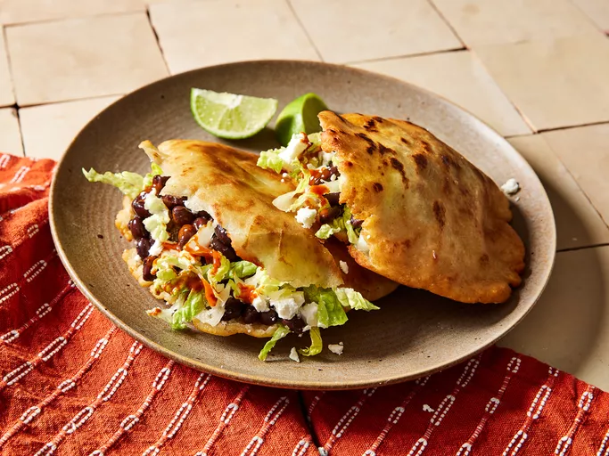

Gorditas

Description
A gordita is a deep fried corn dough filled with cheese, meat, chicken or other ingredients.
Ingredients
- 1 cup corn flour, such as Maseca
- 1 cup hot water
- 1 teaspoon salt
- 1 cup all-purpose flour
- 1 and a half teaspoons baking powder
- 1 tablespoon shortening
- 1 cup oil for frying
Steps
- Gather all ingredients
- Stir masa harina, water, and salt together in a large bowl until combined.
- Whisk flour and baking powder together in a small bowl until combined.
- Gradually stir flour mixture and shortening into masa harina mixture, using clean hands when mixture is cool enough
to touch. If dough seems dry, add more hot water, 1 to 3 teaspoons at a time, until dough is somewhat clay-like in
texture, evenly moistened, and tacky but not sticky.
- Evenly divide and roll dough into 6 balls (about 2 and a half inches or 2 and three quarter ounces each);
keep covered with plastic wrap while working.
- Line a work surface with waxed paper or plastic wrap; sprinkle lightly with water. Working with one ball at
a time, flatten balls on the wet surface into a 5 and a half-inch disc (about until about one eighth-inch
thick). Transfer discs to a waxed paper- or plastic wrap-lined baking sheet; keep covered with plastic wrap
while working with remaining dough.
- Heat a griddle or comal over medium heat. Working in batches if needed, cook gorditas until dry to the
touch with some small, very lightly golden spots, about 2 to 3 minutes per side. Place gorditas in a
single layer, uncovered, on large plates or a large baking sheet.
- Heat oil in a large, heavy skillet over medium to medium-high heat until hot enough to bubble immediately
when edge of gordita is dipped in. Fry gorditas, one by one, until puffed, gently pressing it down into the
oil occasionally with a spatula, about 45 seconds per side.
- Drain briefly on paper towels, then cut crosswise to create an opening large enough to stuff gorditas
full of your favorite foods. Enjoy!
Home